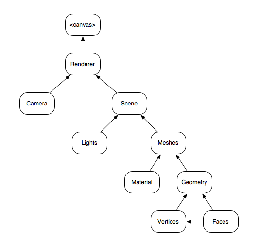

从Threejs到Svelte-Cubed
王福强
数字世界如果继续升级换代， 3D的普及应该是一个大的方向，2021年开始火热的元宇宙概念，其实也是3D继续一展拳脚的地方，当然， 配合AI、云计算等基础设施，可以进一步丰富3D世界的建设与绚丽。
要构建3D世界，已经有很多作业工具可以选用，毕竟， 3D建模也不是什么新鲜的事务了，传统的3D建模工具基于系统的能力， 新一代的3D建模工具则直接基于Web，那基于Web构建3D世界，依赖的主要是什么呢？ 答案是WebGL（2022年可以关注WebGPU），而WebGL则是基于OpenGL等系统级API构建， 而传统的工具恰恰都是基于OpenGL这些API构建的。
WebGL使用称之为GLSL的编程语言编写图形渲染程序 1，这些程序一般成为shader(s)，它们一般会被交给GPU去执行。编写GLSL不是什么赏心悦目的事情，大部分情况， 除非需要工业级精细和精密建模需要，我们一般会选择使用threejs来编写WebGL程序，我们可以把threejs理解成js当年的jquery， 它可以极大简化编写WebGL程序的难度。
一个threejs程序通常由以下几个部分组成：

Meshes以下我们都可以理解成组成3D实体的部件， 一个Mesh通常由一个Geometry+一个或者多个Materials组成。
所有的Meshes添加到Scene组成一个SceneGraph然后跟Camera一起通过Renderer渲染到DOM的某个Canvas上。
空说无凭，让我Show you code：
<!DOCTYPE html>
<html>
<head>
<meta charset="utf-8">
<title>My first three.js app</title>
<style>
body { margin: 0; }
</style>
<script src="three.js"></script>
</head>
<body>
<script>
const scene = new THREE.Scene();
const camera = new THREE.PerspectiveCamera( 75, window.innerWidth / window.innerHeight, 0.1, 1000 );
const renderer = new THREE.WebGLRenderer({antialias: true});
renderer.setSize( window.innerWidth, window.innerHeight );
document.body.appendChild( renderer.domElement );
const geometry = new THREE.ConeGeometry(3,3,3);
const material = new THREE.MeshNormalMaterial( { color: 0x3883F8 } );
const cube= new THREE.Mesh( geometry, [material,material] );
scene.add( cube );
camera.position.z = 5;
const light = new THREE.AmbientLight( 0x404040 ); // soft white light
scene.add( light );
var pointLight = new THREE.PointLight( 0xffffff, 1 );
pointLight.position.set( 25, 50, 25 );
scene.add( pointLight );
function animate() {
requestAnimationFrame( animate );
cube.rotation.y += 0.01;
renderer.render( scene, camera );
}
animate();
</script>
</body>
</html>如果我打开这个页面，就可以看到一个旋转的三角了（当然，你也可以点击下面的图片直接看效果）：
这虽然是最简单的threejs程序了，但依然有很多概念需要理解，比如我们向Scene了添加了Light， 我们把Camera的位置重新设置， 我们通过requestAnimationFrame来调度渲染等。
不过，一旦理解了threejs的基础概念和API支持，再使用svelte-cubed来开发就更加方便了。
svelte-cubed是svelte框架 2作者Rich Harris开发的实验性类库（当前状态）， 它延续了svelte的理念，通过声明式(declaritive)组件的方式来构建threejs应用，比如，上面的demo通过svelte-cubed重构之后就很简单了：
import * as THREE from 'three';
import * as SC from 'svelte-cubed';
<SC.Canvas antialias background={new THREE.Color('papayawhip')} shadows fog={new THREE.FogExp2('papayawhip', 0.1)}>
<SC.Mesh geometry={new THREE.ConeGeometry()} position={[3, 3, 3]}
material={new THREE.MeshNormalMaterial({ color: 0x3883F8 })}/>
<SC.PerspectiveCamera position={[0, 0, 5]}/>
<SC.OrbitControls enableZoom={true} maxPolarAngle={Math.PI * 0.51}/>
<SC.AmbientLight intensity={0.6}/>
<SC.PointLight .../>
</SC.Canvas>附带着，通过引入一行<SC.OrbitControls enableZoom={true}/>我们就可以通过鼠标与3D实体和场景进行交互 3。
另一个好处就是，借着Svelte的编译，我们顺道还完成了treeshaking，把不需要的js依赖去除掉了，用户加载的资源更少，自然也就更快。
没骗你吧？ svelte-cubed是不是让threejs更简单？
当然，svelte-cubed因为还是在试验期，不够成熟和完善，所以，文档方面完成度也不高，很多组件如果要深入了解只能自己读代码，但个人感觉理念很好，期望它能尽快完善起来啦~
GLSL全称为OpenGL Shading Language↩︎
啥？你不知道svelte框架是啥？那我就不得不王婆卖瓜了，可以看看我写的Simple Svelte↩︎
欢迎加入「福强私学」
跨越2190个日夜，始终坚持“实践 + 原创”打造的715125字专属知识库，囊括了（但不限于）从职场、技术、管理与商业等多个板块的内容。
- 一个ChatGPT触达不到的地方
- 一个带你超越AI/人工智能的地方
- 一个与你一起成长的地方

开天窗，拉认知，订阅「福报」，即刻拥有自己的全模态人工智能。